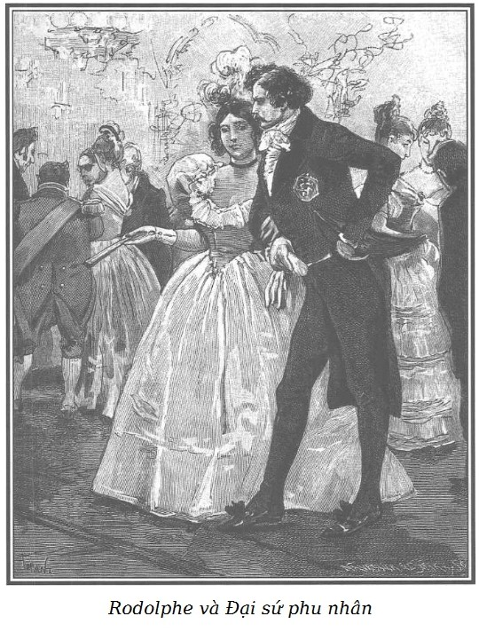

Vào lúc mười một giờ đêm, một vệ binh Thụy Sĩ mặc chế phục mở cổng một biệt thự ở phố Plumet cho một cỗ xe ngựa hòm màu xanh lộng lẫy thắng hai con tuấn mã màu xám tuyệt đẹp hăng sức và tầm vóc cao lớn bậc nhất; trên chỗ ngồi bọc vải viền tua thêu bằng lụa, chễm chệ một người đánh xe đã to lớn như hộ pháp lại còn mặc một chiếc áo ngoài màu xanh lót dạ lông thú với cổ áo choàng bằng lông chồn viền ngân tuyến ở tất cả các chỗ mở và nẹp khuyết áo; phía sau chiếc xe ngựa bốn bánh đó, một người theo hầu khổng lồ, đánh phấn và mặc chế phục màu lam, màu thủy tiên và màu bạc, đến bắt chuyện một người phục vụ có bộ ria rất lớn, đeo lon như đội trưởng dàn quân nhạc và đội mũ viền rộng bị lấp một nửa dưới một chùm lông đà điểu vàng và xanh.
Đèn xe rọi sáng bên trong xe lót toàn satin; Rodolphe ngồi bên phải, bên trái ông là Nam tước de Graün và trước ông này là ông Murph trung thành.
Để tỏ lòng tôn kính quốc vương của vị Đại sứ hôm nay mời ông dự hội khiêu vũ, Rodolphe chỉ đeo trên bộ lễ phục tấm thẻ bài nạm kim cương huân chương hạng +++. Dải băng da cam huân chương men sứ bội tinh Đại quân lộc Đại bàng Gerolstein đeo ở cổ ngài Walter Murph, Nam tước de Graün cũng được thưởng những huy hiệu như vậy; nhắc đến mà nhớ lại thôi! Một số không đếm xuể huân chương của nhiều nước đeo lủng lẳng ở một sợi dây chuyền bằng vàng đính giữa hai lỗ khuyết đầu của chiếc áo lễ phục của ông này.
Rodolphe gật gật đầu:
– Tôi hoàn toàn vui lòng vì những tin tức tốt đẹp từ bà Georges báo cho tôi biết tình hình cô gái đáng thương mà tôi che chở hiện nay đang ngụ ở trại Bouqueval; công chăm sóc của ông David đã đạt thành tích kỳ diệu. Nếu không bị nỗi buồn rầu đè nặng, cô bé ấy hẳn có thể còn khỏe hơn nữa kia! Và nhân việc Marie ấy mà, ông Murph, ông hãy nhận đi, – Rodolphe mỉm cười nói tiếp – nếu một trong những người bạn bất hảo trước đây của ông ở khu Nội Thành, thấy ông giả trang như thế này, ông bán than dũng cảm ạ, chắc họ ngạc nhiên quá đỗi đấy nhỉ!
– Nhưng thưa Đức ông, tôi tin rằng ngài cũng sẽ gây ra một sự ngạc nhiên chẳng kém nếu đêm nay ngài lại muốn đi tới phố Temple, thân mến thăm hỏi bà Pipelet dụng ý làm vui phần nào bệnh u sầu của ông Pipelet tội nghiệp, mà ông này chỉ mong được kết thân với ngài, đúng như bà gác cổng quý báu ấy đã nói.
Ông Nam tước tiếp lời ông Murph:
– Đức ông đã tả cho chúng tôi ông Alfred Pipelet quá đầy đủ với bộ áo lễ xanh lục, dáng vẻ đạo mạo và cái mũ chỏm bất di bất dịch khiến tôi tưởng như ông ta đang chễm chệ trong gian buồng trực tối tăm và ám khói của mình. Vả chăng tôi cũng dám hy vọng rằng Đức ông chắc cũng hài lòng về những điều chỉ dẫn của người thám tử mật. Ngôi nhà phố Temple hẳn đã đền đáp xứng đáng và trọn vẹn sự mong chờ của Đức ông chứ ạ?
Rodolphe gật đầu:
– Được, tôi tìm thấy ở đây nhiều hơn những gì tôi mong đợi. – Rồi sau một lúc buồn rầu lặng lẽ, và để xua tan những ý nghĩ đau buồn do lo sợ cho Hầu tước phu nhân d’Harville, ông nói tiếp, giọng đã hơi vui vui lên một chút. – Tôi không dám thú nhận trò trẻ con ấy nhưng thấy có một cái gì hấp dẫn trong những sự tương phản này; có buổi là anh thợ vẽ quạt, ngồi nhậu nhẹt trong quán rượu tồi tàn ở phố Hàng Đậu; sáng nay thì là anh thư ký nhà buôn đãi bà Pipelet một cốc rượu lý chua đen, và đêm nay thì lại là một trong những người được đặc ân của Chúa cho cai trị dân nơi hạ giới này. Người có bốn mươi écu nói lợi tức của tôi chẳng kém gì một nhà triệu phú. – Rodolphe mỉm cười nói tiếp như thể nhân tiện mà bóng gió nói đến lãnh thổ nhỏ bé của đất nước ông.
Nam tước de Graün nhìn Rodolphe:
– Nhưng có biết là mấy tay triệu phú, thưa Đức ông, lại không có lương tri hiếm hoi và đáng khâm phục của người chỉ có bốn mươi écu!
– Chà! Ông de Graün thân mến ơi! Ông thật là tốt quá, tốt đến nghìn lần đấy! Ông tử tế với tôi quá đấy! – Rodolphe làm ra vẻ vừa vui thích vừa lúng túng; trong lúc đó thì ông Nam tước nhìn ông Murph như một người đã nhận ra quá chậm là mình vừa nói một điều ngu ngốc.
Rodolphe vẫn giữ vẻ nghiêm trang và điềm đạm:
– Thực đấy, ông de Graün thân mến ạ, làm thế nào để tỏ lòng biết ơn ông vì ông đã muốn đánh giá tôi cao đến như thế và nhất là tìm cách nào đấy để đền đáp xứng đáng được nhỉ!
– Thưa Đức ông, tôi van ngài, tôi đâu dám!
Ông Nam tước đã quên khuấy đi một lúc rằng Rodolphe rất ghét thói phỉnh nịnh và thường hay trừng phạt thói ấy bằng những lời chế giễu cay độc.
– Sao vậy kia, ông Nam tước? Nhưng mà tôi lại không muốn mang ơn mà không trả; đây là tất cả những gì tôi có thể tặng ông lúc này; lấy danh dự mà thề, nếu lúc này ông mới chỉ nhiều nhất có hai mươi tuổi thôi, thì Antinoüs* cũng không thể có vẻ đẹp mê hồn bằng ông được.
(*)Antinoüs (110/111-130): Một tùy tùng và cũng là tình nhân của Hoàng đế La Mã Hadrian, nổi tiếng là người rất đẹp trai. Rodolphe chủ tâm giễu cợt ông de Graün.
– Chao ôi! Thưa Đức ông, xin Người tha cho.
– Ông Murph hãy nhìn đây này! Pho tượng thần Apollon ở Vọng lâu* liệu có thân hình mảnh dẻ và thanh nhã hơn, trẻ hơn Nam tước đây không nhỉ?
Apollon ở Vọng lâu (Apollon du Belvedere) là tên một pho tượng điêu khắc bằng đá cẩm thạch nổi tiếng ở thời kỳ La Mã cổ đại.
– Thưa với Đức ông, đã từ lâu tôi mới lại trót dại như thế này đây.
– Và cái áo măng tô màu huyết dụ này mới hợp với ông làm sao!
– Thưa Đức ông, từ nay trở đi, tôi xin sửa chữa.
– Và cái vòng vàng này, nó kẹp mà chẳng che lấp mớ tóc đen nhánh đang xõa trên cái cổ đẹp tuyệt trần kia kìa!
– Chao ôi, thưa Đức ông, xin Người tha cho, Người tha cho tôi! Tôi hối lỗi! – Nhà ngoại giao không may lắp bắp một cách tuyệt vọng. Người ta không quên là ông đã năm mươi tuổi, tóc đã hoa râm, uốn quăn và rắc phấn, ông thắt cà vạt trắng tinh, khuôn mặt xương xương đeo kính kẹp mũi gọng vàng.
– Trời đất ơi, ông Murph này, chỉ còn thiếu cái túi đựng tên bằng bạc trên vai và một cây cung nữa trong tay là ông ta sẽ giống hệt người chiến thắng mãng xà Python* đấy!
Python là một con mãng xà cực kỳ to lớn và hung dữ trong thần thoại Hy Lạp. Sau này Python đã bị thần Apollo tiêu diệt.
Apollo là thần ánh sáng, chân lý và nghệ thuật, thường được thể hiện dưới hình dạng một người đàn ông trẻ, đẹp trai, không có râu, tóc vàng, đeo cung bạc và mang đàn lia trong các tác phẩm nghệ thuật.
Ông quý tộc người Anh cười cười:
– Xin Đức ông buông tha cho ông Nam tước! Xin đừng truy ông ấy bằng thần thoại nữa! Tôi xin bảo đảm với Điện hạ rằng chẳng bao lâu nữa, ông ấy sẽ chừa hẳn tật nói lấy lòng vì rằng trong kho từ vựng của nước Gerolstein chúng ta, từ chân lý được cắt nghĩa như vậy.
– Sao cơ? Cả ông nữa! Ông bố già Murph! Lúc này mà bố dám…
– Thưa Đức ông, ông de Graün tội nghiệp làm tôi ái ngại, tôi muốn chịu chung hình phạt với ông ấy!
– Thưa với ông, ông bán than thân mến tầm thường của tôi, đó là một sự tận tâm với bạn khiến ông thêm phần vinh dự. Nhưng nghiêm túc mà nói, ông de Graün thân mến ạ, sao ông có thể quên rằng tôi chỉ cho phép loại như d’Harneim và đồng bọn được nói lời phỉnh nịnh mà thôi? Vì công bằng mà nói, họ còn biết nói gì khác? Đó là tiếng hót cũng hào nhoáng như bộ lông* mà! Nhưng một người có nhận thức như ông, trí tuệ như ông mà cũng vậy thì… Eo ơi! Ông Nam tước ạ!
Nhắc lại một câu trong truyện ngụ ngôn La Fontaine Con quạ và con cáo. Có nghĩa tương đương như câu “Người làm sao của chiêm bao làm vậy”.
Ông Nam tước quả quyết:
– Vậy thưa Đức ông, mong ngài tha lỗi cho tôi, phải thật rất là tự hào vì người ghét cay ghét đắng những lời tán dương…
– May quá, Nam tước ạ, tôi thích như thế đấy! Ông cứ nói xem nào!
– Vậy thì, thưa Đức ông, như vậy không khác gì một người phụ nữ đẹp nói với một trong những kẻ hâm mộ mình: Trời ơi! Tôi biết là tôi thật đẹp, sự tán thưởng của các ngài thật hoàn toàn vô ích và chán ngắt. Cần gì phải thừa nhận một sự hiển nhiên? Có ai đi rao to khắp phố phường rằng “mặt trời chiếu sáng” không nhỉ?
– Nói thế này thì khéo hơn đấy, ông Nam tước ạ! Nhưng lại càng nguy hại hơn; nói cho khác đi để hành ông đấy! Tôi thừa nhận với ông rằng lão thầy tu Polidori không thể tìm được cách nào tốt hơn để giấu đi nọc độc của lời nịnh hót đấy!
– Thưa Đức ông, tôi xin thôi không nói nữa!
Lần này thì ông Murph nghiêm giọng:
– Thưa Đức ông, hẳn lúc này Đức ông không còn nghi ngờ gì nữa rằng Người đã gặp lại lão thầy tu dưới lốt lang băm!
– Tôi không còn nghi ngờ gì nữa vì các ông đã được báo trước rằng lão đã ở Paris một thời gian còn gì!
– Tôi quên khuấy mất! Quên không tâu với Đức ông về lão thì đúng hơn vì tôi vốn biết rằng nhắc đến lão là lại khiến Đức ông đau lòng.
Rodolphe sa sầm nét mặt và đắm mình trong những ý nghĩ đau buồn, ông lặng im cho đến lúc cỗ xe đi vào sân Đại sứ quán.
Tất cả các cửa sổ của ngôi biệt thự bao la ấy sáng rực trong đêm đen. Một hàng rào người hầu mặc chế phục đại lễ sắp hàng từ thềm và từ các hành lang đến tận phòng đợi, ở đấy những người hầu buồng túc trực, thật là oai nghiêm và vương giả.
Bá tước đại sứ và phu nhân có ý đứng chờ ở đại sảnh cho đến khi Rodolphe tới. Ông đến ngay, theo sau là Murph và de Graün.
Rodolphe năm đó đã ba mươi sáu tuổi và mặc dù đã gần tuổi xế chiều, sự cân đối hoàn toàn và phong thái trang nghiêm nhã nhặn toát ra từ khắp người ông khiến ông đặc biệt lỗi lạc, ngay cả khi những lợi thế đó không cần được đề cao hơn nhờ địa vị uy nghi rạng rỡ.
Khi ông xuất hiện ở đại sảnh của đại sứ quán, ông như khác hẳn, không còn diện mạo sôi nổi, dáng đi nhanh nhẹn và khỏe mạnh của anh thợ vẽ quạt đã chiến thắng Chọc Tiết; cũng không còn là anh thư ký nhà buôn hay giễu cợt đã thông cảm một cách vui vẻ với những nỗi bất hạnh của ông Pipelet.
Đúng là một ông hoàng trong mẫu nên thơ của từ đó.
Rodolphe hiên ngang ngẩng cao đầu; mái tóc màu nâu hạt dẻ, xoăn tự nhiên, đóng khung vầng trán rộng nở và cao quý; mắt nhìn dịu dàng và oai nghiêm; nói chuyện với ai cũng từ tốn, khoan dung và dí dỏm, hồn nhiên; nụ cười duyên dáng và thanh nhã, phô hàm răng ngà ngọc mà bộ ria màu sẫm càng làm trắng bóng hơn. Mái tóc mai nâu ôm lấy khuôn mặt trái xoan đầy đặn, hơi xanh, xuống tận cái cằm chẻ và hơi khô.
Rodolphe ăn mặc rất giản dị – cà vạt và gi-lê trắng, lễ phục xanh cài khuy đến tận cổ, bên trái đeo thẻ bài nạm kim cương lóng lánh, bó lấy thân mảnh dẻ, thanh nhã và uyển chuyển; tóm lại có một nét gì vừa trượng phu vừa kiên quyết, rắn rỏi trong tư thế đã uốn nắn lại điều mà có thể coi như quá ư dễ thương của sự hài hòa duyên dáng ấy!
Rodolphe rất ít khi tiếp xúc với bên ngoài, ông mang nhiều cốt cách đế vương khiến mỗi khi ông đi tới đâu, mọi người đều xôn xao, để ý, mọi cái nhìn đều hướng về ông khi ông vào đại sảnh của đại sứ quán, với Murph và de Graün theo sau vài bước.
Một tùy viên sứ quán được giao nhiệm vụ trông chừng, khi ông tới, vào thông báo ngay với Bá tước phu nhân; phu nhân cùng với ông đại sứ đến trước Rodolphe:
– Tôi không biết cảm tạ đức Điện hạ như thế nào, vì hôm nay Người đã hạ cố đến đây với chúng tôi.
– Thưa đại sứ phu nhân, xin phu nhân biết cho là lúc nào tôi cũng rất sốt sắng đến hầu phu nhân và rất lấy làm sung sướng để thưa với ngài đại sứ rằng tôi rất mến ngài; vì chúng ta quen biết nhau đã khá lâu rồi, phải không, thưa ngài Bá tước.
– Đức Điện hạ có lòng nhớ đến chúng tôi như thế này thật là tốt quá, khiến chúng tôi lại có cớ để chẳng bao giờ quên ơn Người!
– Thưa ngài Bá tước, xin bảo đảm với ngài rằng nếu một vài kỷ niệm nào đấy luôn luôn được tôi nhớ tới thì đó chẳng phải do tôi; tôi chỉ có may mắn là chỉ ghi sâu trong lòng những gì đã khiến tôi thích thú.
Bà Bá tước mỉm cười:
– Nhưng mà đức Điện hạ vốn sẵn có trí nhớ tốt kỳ diệu kia mà!
– Có phải không thưa phu nhân, vì thế nhiều năm nữa sau đây, tôi hy vọng tôi sẽ lấy làm sung sướng có dịp để nhắc lại với phu nhân ngày hôm nay đây, với sự phong nhã, thanh lịch cực kỳ, đứng hạng nhất trong dạ hội khiêu vũ này… Vì thực tình, tôi xin nói thật điều này, chỉ có phu nhân mới là người giỏi tổ chức những buổi chiêu đãi mà thôi!
– Kìa, thưa Điện hạ!
– Thưa, đã hết đâu ạ! Ngài đại sứ, thưa ngài, tại sao tôi lại cảm thấy như ở đây mọi người phụ nữ đều xinh đẹp hơn ở mọi nơi khác nhỉ?
– Đó chính là vì đức Điện hạ mở rộng lòng khoan dung mà Người ban cho chúng tôi quá nhiều đấy ạ.
– Xin phép ngài cho tôi nghĩ khác, ngài Bá tước ạ, điều đó hoàn toàn phụ thuộc vào Bá tước phu nhân đấy thôi!
Bà Bá tước lại mỉm cười:
– Xin đức Điện hạ làm ơn cho tôi biết điều kỳ diệu ấy!
– Đơn giản thôi ạ, thưa phu nhân: phu nhân đã tiếp đón các vị phu nhân xinh đẹp ấy một cách cao nhã tuyệt vời, nói với mỗi bà những lời thú vị ngọt ngào, ngay cả với những bà hoàn toàn chưa xứng đáng… chưa xứng đáng với những lời khen ngợi dễ thương ấy – Rodolphe nói đến đây thì mỉm cười dí dỏm – … cũng lại cười hớn hở vì được phu nhân quý mến; trong khi đó thì những ai thật sự xứng đáng cũng không kém thích chí vì được phu nhân đánh giá cao; những điều thú vị vô hại ấy khiến tất cả nở mày nở mặt, niềm vui sướng khiến những người kém thú vị nhất cũng trở nên hấp dẫn và do đó mà, thưa Bá tước phu nhân, các bà ở đây dường như xinh đẹp hơn ở mọi nơi khác. Tôi tin chắc ngài đại sứ đây cũng sẽ phát biểu như tôi thôi!
– Đức Điện hạ ban cho tôi những lời chí lý quá khiến tôi cũng sẽ trở thành xinh đẹp, như một phu nhân không xứng đáng hoàn toàn… hoàn toàn như những lời ca ngợi của người khác; xin vui lòng nhận cách giải thích của đức Điện hạ với lòng biết ơn vô cùng và thật vui sướng bao nhiêu nếu quả thật đúng như thế.
– Để thuyết phục phu nhân thấy không có gì thực hơn lời tôi đã nói, xin phu nhân hãy cứ ngắm xem và thử quan sát đúng lúc về những kết quả của lời khen ngợi trên diện mạo con người.
– Chà! Thưa Điện hạ – Bá tước phu nhân mỉm cười – như thế thì là một cái bẫy đáng sợ đấy ạ!
– Nào, thưa Bá tước phu nhân, tôi xin từ bỏ ý định ấy đây, nhưng với điều kiện là phải cho phép tôi được đưa tay cho phu nhân vịn một lát… người ta đã nói với tôi về một nhà kính trồng những kỳ hoa dị thảo trong tháng Giêng này… Phu nhân liệu có thể làm ơn dẫn tôi đi xem kỳ quan xứng đáng với chuyện Nghìn lẻ một đêm ấy không?
– Rất vui lòng, thưa Điện hạ, nhưng mà thiên hạ đã đồn đại hơi quá đấy ạ! Vả chăng, Người cũng sẽ ban ơn cho ý kiến, nếu lòng khoan dung đại độ thường ngày của Người không huyễn hoặc Người…

.Rodolphe đưa tay cho đại sứ phu nhân dựa và cùng bà đi vào các phòng khách khác trong khi Bá tước de +++ đại sứ trò chuyện thân mật với ngài de Graün và ngài Murph, họ vốn quen biết nhau từ lâu.